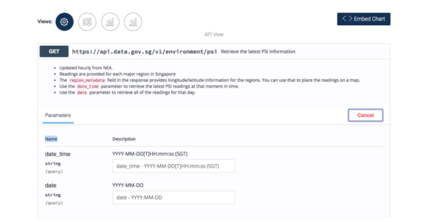

Week 8

- Introduction to APIs (Application Programming Interfaces) and their importance in web development.
- Providing links to data sources such as data.gov.sg and specific datasets related to APIs.
- Importance of testing APIs using tools like POSTMAN before coding, and suggesting the use of POSTMAN's code feature to generate AJAX code for Fetch and jQuery.
- Providing links to readings and tools for further learning and development, including resources on AJAX, API references, JSON, and useful tools like JSONView Chrome Extension and Animista.net for CSS animations.
- concept of asynchronous JavaScript and its role in making API requests, where the client doesn't freeze while waiting for a server response. JavaScript handles these requests, parses responses, and updates the DOM accordingly. The XMLHttpRequest or XHR API is typically used for making requests, with APIs defining the rules of communication between client and server. The incoming data from API requests can be in various formats, not just XML.
Snippets of what i've learned
API
